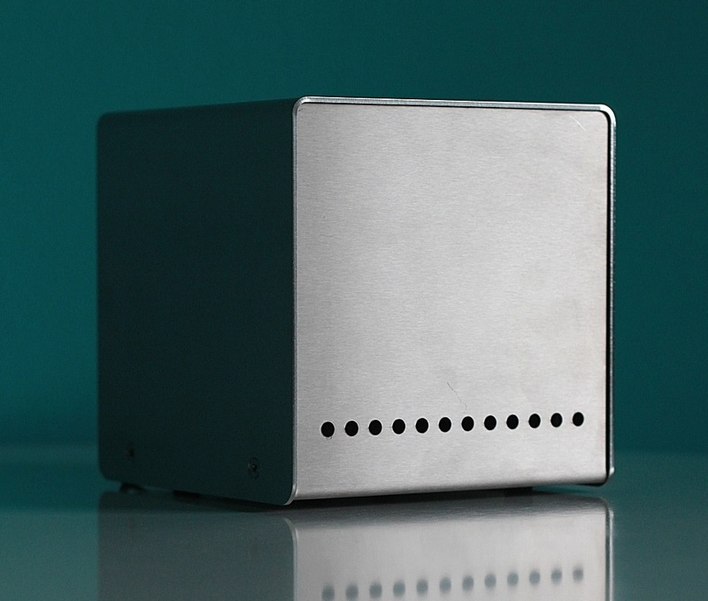

A compact and stylish storage server — designed for 24/7-operation in your living room.
Background
When I came across the famous Backblaze storage pod, I was immediately intrigued by its clever, no-frills design. But who really needs 67 terabytes (or even 135) at home? I decided to "downscale" their excellent hardware design for home use, and after a long period of experimentation, the Evercube is the final result.
The design is open hardware, available under a Creative Commons license. But for your convenience, I am also offering all components needed to build the Evercube as a Do-It-Yourself kit.
Facts
| dimensions | 150 x 150 x 150 mm |
|---|---|
| material | stainless steel, brushed, 2 mm |
| processor | Marvell "Kirkwood", single core, 1.2 Ghz |
| memory | 512 MB, DDR2 |
| disk slots | 5 x SATA2, 2.5" |
| max. capacity | 5 TB |
| power | 20 W (5 VDC, 4 A) |
| cooling | ultra-silent fan, 140 mm |
| kit price | € 429 — includes 19% VAT |
Questions & Answers
General
- What is it suited for?
- The Evercube is primarily intended as an "always-on" home server. 5 terabytes of raw storage capacity make it a superb file server with plenty of room for pictures, music, movies or backups. Of course it can also be used as a web server, bittorrent server ... or to host your personal diaspora node?
- When is the kit available?
- The first batch (ten kits) will be ready for delivery in mid-November 2011. The second batch (another twenty) will probably be ready a few weeks later. So pre-order now if you want to be sure to receive your kit before Christmas!
- So you live in Belgium?
- Nope, I am german and live in Berlin — I just couldn't resist the cool domain hack. All custom components (like the stainless steel chassis) are manufactured in Germany.
Assembly
- What is included in the kit?
- The kit contains everything — except harddisks — that is needed to build the Evercube: enclosure, motherboard (with onboard CPU and memory), SATA backplane, internal disk scaffold, ultra-silent fan, power supply, wires, clamps, screws, nuts, washers ...
- How difficult is it to put together?
- Pretty easy, actually. If you know how to operate a screwdriver, you should be fine ;) Special care has been taken to make assembly as simple as possible — all electrical connections are done with clamps, for example, so no soldering is necessary.
- What tools do I need?
- Only screwdrivers and pliers.
Technical
- Which disks can be used?
- Any 2.5" SATA (= laptop) disk, including "thick" (12.5mm) 1 TB models. You can even use the Evercube without any disks at all, as it boots from internal flash (512 MB).
- Seriously — laptop disks in a server?
- It might sound strange, but laptop disks actually have a lot of advantages for an always-on home server: they use less energy, run very quiet, and take up little space. Although you pay roughly double the price per gigabyte compared to 3.5" disks, you pay less for electricity, and thus save money in the long run.
- What operating system does the Evercube run on?
- The Sheeva Plug (which we use as motherboard) comes with Ubuntu 09.04 pre-installed on flash. You can find instructions on plugcomputer.org how to install a different operating system (including Debian, Fedora, Gentoo and FreeBSD).
- What other software is installed?
- Nothing — just a stock Ubuntu installation, so you can customize the system however you want.
- How about ZFS?
- Sure, ZFS would be ideal for a file server — but it is currently not available on Ubuntu. FreeBSD is an option, although the available memory (512 MB) might turn out to be too little for good ZFS performance.